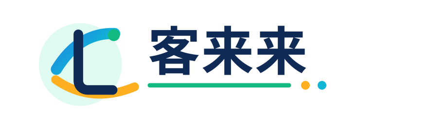
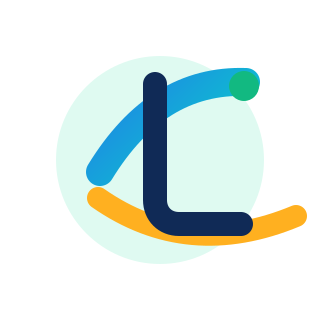
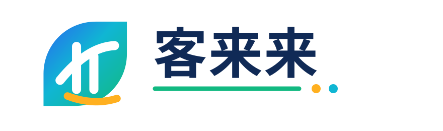
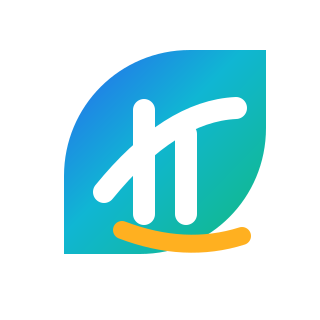
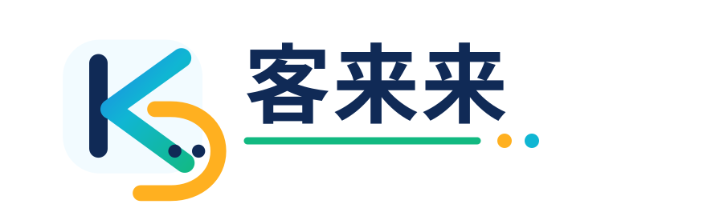
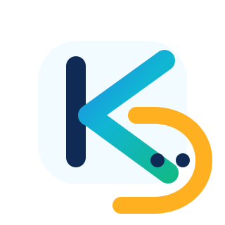

01 来客环
主推：一个客户流入的专属符号，克制、容易延展。


02 来叶
更亲和，适合中小商家和私域增长。


03 K 回路
更 SaaS / 科技感，适合桌面端和国际化。
参考相邻 SaaS/CRM/客服品牌规律后收敛：一个主符号 + 中文字标，不做黑白稿。


主推：一个客户流入的专属符号，克制、容易延展。


更亲和，适合中小商家和私域增长。


更 SaaS / 科技感，适合桌面端和国际化。